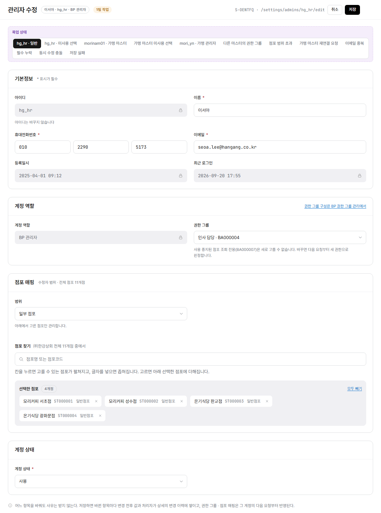

config/admins-edit.html?embed=1 렌더링(LNB·상단 GNB 제외, 화면 본문만, BP 마스터·hg_hr·일반 상태 기준) 위에 번호를 붙이고 우측에 설명을 매칭했다. manyfast S-OENTFQ 기준.
화면명
화면경로
편집 모드: "핀 추가"를 누르고 화면을 한 번 클릭하면 그 자리에 새 번호가 생깁니다(또는 아래 "+ 항목 추가"로 기본 위치에 바로 추가). 기존 핀은 드래그로 옮기고, 오른쪽 × 로 지웁니다. Shift(또는 Ctrl)+클릭으로 핀 여러 개를 한꺼번에 선택해 같이 드래그할 수 있습니다. 빈 곳을 클릭하면 선택이 풀립니다. 항목명·설명은 클릭해서 바로 고치세요. 다 끝나면 "내보내기"로 새 HTML 파일을 받아 저장소 파일과 바꿔주세요(이 브라우저에는 임시로 자동저장됩니다).

Description
+ 항목 추가 (기본 위치에 추가 — 드래그로 옮기세요)
"목업 권한"·"목업 상태" 토글은 실제 화면 요소가 아니라 목업 자체의 전환 컨트롤이라 번호에서 제외했다. 상단 GNB와 좌측 LNB는 이 화면정의서 스크린샷 자체에서 제외했다(embed 모드). 가맹 관리자 계정을 연결된 가맹 마스터가 고칠 때의 화면(연결 가맹 마스터 읽기전용 필드 포함)과, 다른 역할이 가맹 관리자 계정을 열었을 때의 전체 읽기전용 화면은 레이아웃이 크게 다르지 않아 별도로 캡처하지 않고 각 항목 설명에 규칙을 정리했다."